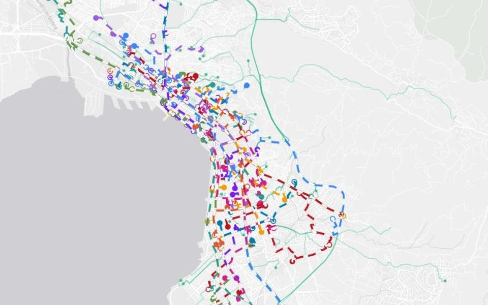
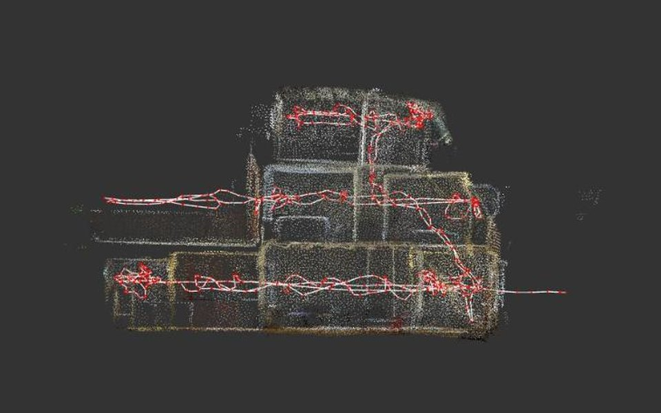

Open live project ↗Selected work

Open live project ↗Delft
I am a Geomatics engineer with a background in spatial planning and mobility. I have experience in geodata storage, processing, and visualization utilizing vector and raster data formats. I like to combine code with a designer’s eye.
Selected work

Open live project ↗
Open live project ↗